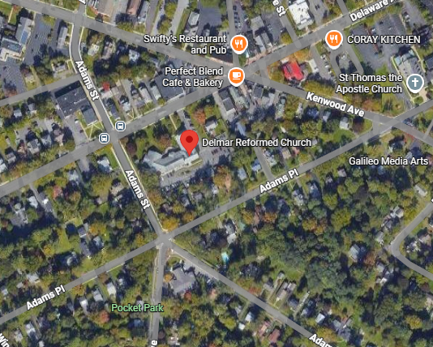

Sobre la empresa
Delmar's es una bodega tradicional de Queens, conocida por preparar los mejores sándwiches del vecindario. Es un comercio familiar que sirve como punto de encuentro para los residentes locales desde hace años.
Detalles del Puesto
Cargo: Empleado de Mostrador y Repartidor
Fecha de ingreso: Agosto 2015
Fecha de fin: Junio 2016
Tareas realizadas:
- Atención al cliente en mostrador y preparación de pedidos personalizados.
- Control de stock y reposición de mercadería en góndola.
- Reparto de pedidos a domicilio asegurando la integridad de los productos.
Ubicacion
